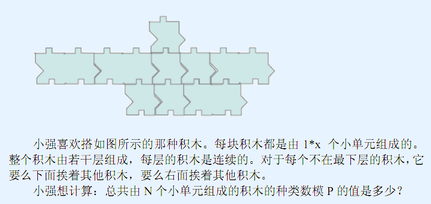

两个正整数N(N<=1,000,000,000)，P(P<=100,000,000)。保证P是一个质数。
你要输出N个小单元组成的积木的数量模P的值。
3 997
12
【样例解释】 以下展示了这12种可能的积木。把每个数字想象成一个单位，相同的数字属于同一块积木。 １１１ １１２ １２２ １２３
２ １１
３ １２
２２ １
２３ １
3 2 1 【数据说明】 对于100%的数据，N<=1000000000。P<=100000000